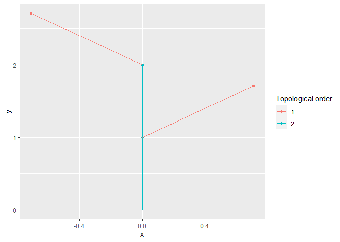

The goal of XploRer is to read, write, analyze and plot MTG (Multi-scale Tree Graph) files. These files describe the plant topology (i.e. structure) along with some attributes for each node (e.g. geometry, colors, state…).
The package is under intensive development and is in a very early version. The functions may heavily change from one version to another until a more stable version is released.
1. Installation
you can install the release version of XploRer from GitHub with:
# install.packages("devtools") devtools::install_github("VEZY/XploRer")
2. Examples
2.1 Reading a file
Read a simple MTG file:
library(XploRer) MTG = read_mtg("https://raw.githubusercontent.com/VEZY/XploRer/master/inst/extdata/simple_plant.mtg")
The read_mtg() function returns a list of 4:
-
classes: a
data.framethat holds information about the type of nodes used in the MTG (e.g. Internode, Leaf, etc…), the MTG scale for each one, and some more details. Here is the classesdata.framefrom our example:MTG$classes #> SYMBOL SCALE DECOMPOSITION INDEXATION DEFINITION #> 1 $ 0 FREE FREE IMPLICIT #> 2 Internode 6 FREE FREE IMPLICIT #> 3 Individual 1 FREE FREE IMPLICIT #> 4 Leaf 2 FREE FREE IMPLICIT #> 5 Axis 2 FREE FREE IMPLICIT
-
description: a
data.framedefining the potential topological constraints existing between nodes. Here is the descriptiondata.framefrom our example:MTG$description #> LEFT RIGHT RELTYPE MAX #> 1 Internode Internode, Leaf + ? #> 2 Internode Internode, Leaf < ?
-
features: a
data.framelisting all attributes present in the file and their associated type. Here is the featuresdata.framefrom our example:MTG$features #> NAME TYPE #> 1 XX REAL #> 2 YY REAL #> 3 ZZ REAL #> 4 FileName ALPHA #> 5 Length ALPHA #> 6 Width ALPHA #> 7 XEuler REAL
-
MTG: a
data.treestructure defining all nodes, their attributes and their relationships:MTG$MTG #> levelName #> 1 node_1 #> 2 °--node_2 #> 3 °--node_3 #> 4 ¦--node_4 #> 5 °--node_5 #> 6 °--node_6
2.2 Mutate the MTG
The attributes (also known as features or variables) of the MTG can be mutated using mutate_mtg(). It allows to compute new variables, or modify the existing ones.
Compute new variables
mutate_mtg() borrows its grammar from dplyr. We can compute a new variable based on the values of others:
# Import the MTG: filepath= system.file("extdata", "simple_plant.mtg", package = "XploRer") MTG = read_mtg(filepath) # And mutate it by adding two new variables, Length2 and Length3: mutate_mtg(MTG, Length2 = node$Length + 2, Length3 = node$Length2 * 2)
We can note two things here:
We use
node$to access the values of a variable inside the MTG. This is done to avoid any conflicts between variables from the MTG, and variables from your environment;Length3uses the results ofLength2before it even exist. This is very powerful to construct many new variables at once. It is allowed thanks to a sequential construction of the variables.
As with dplyr main functions, mutate_mtg() can be used with pipes:
read_mtg(filepath)%>% mutate_mtg(Length2 = node$Length + 2)
This is allowed because the function returns the results invisibly. Note that it is mutating the MTG in place though, so no need to assign the results of mutate_mtg() to a variable.
You can also use functions inside the call of the function. Some helpers are provided by the package to compute variables based on the parents or children of the node (see get_parent_value() and get_children_value()). Here is an example were we define a new variable called Length_parent that is the length of the node’s parent:
mutate_mtg(MTG, Length_parent = get_parent_value("Length"))
We can also make more complex associations. Here is an example were we need the sum of the surface of the section of all children for the nodes:
mutate_mtg(MTG, section_surface = pi * ((node$Width / 2)^2), s_surf_child_sum = sum(get_children_values("section_surface"),na.rm=TRUE))
We first compute the surface of the section of each node, and then we sum the values for all children of the nodes. This is helpful to check if our MTG follows the pipe model.
The results can be viewed using the functions from the data.tree package:
data.tree::ToDataFrameTree(MTG$MTG,"Length","Length2","Length3","Length_parent","section_surface","s_surf_child_sum") #> levelName Length Length2 Length3 Length_parent section_surface #> 1 node_1 NA NA NA NA NA #> 2 °--node_2 NA NA NA NA NA #> 3 °--node_3 4 6 12 NA 0.7853982 #> 4 ¦--node_4 10 12 24 4 28.2743339 #> 5 °--node_5 6 8 16 4 NA #> 6 °--node_6 12 14 28 6 38.4845100 #> s_surf_child_sum #> 1 0 #> 2 0 #> 3 0 #> 4 0 #> 5 0 #> 6 0
2.3 Plotting a plant
2.3.1 Static plot
The plant topology can be plotted using the autoplot() function. This function is implemented by ggplot2 so you’ll need to load this package before-hand:

The function can be used in a pipe, such as:
read_mtg(filepath)%>% mutate_mtg(Length2 = node$Length + 2)%>% autoplot(.)
2.3.2 Interactive plot
The same plot can be rendered as an interactive plot using:
plotly_MTG(MTG)

plotly_MTG() uses the plotly API under the hood.
It is also possible to add any variable in the tooltip appearing on hover of a node by adding it to the call. For example if we need the Length and the Width of the nodes, we would write:
plotly_mtg(MTG, Length, Width)
3. Help
Please see the OpenAlea documentation (especially chapter 8) for more details on the MTG files.
If you have any other problem related to the package, please feel free to fill an issue on Github.